Version History
1.0 Initial release 1.1 'Planning' added 'Area Structure' separated from the main body 1.2 Updated to include Avenger's comments about v1.1 2.0 'Editing The Finished .tis File' added 2.1 'Editing The Finished .tis File' separated into two parts; replacing small blocks/individual tiles and replacing the entire tileset in one go 2.2 'Editing The Finished .tis File' moved to underneath 'The Master 2da File' 'Introduction' modified to focus on this tutorial only. 2.3 'Starting the WED file' updated Image 3 updated Image 6 inserted - all others renumbered upwards as needed 2.4 'Area Songs' added 'Planning' moved to the start of the tutorial - all images renumbered 2.5 'Creating a night WED' added 2.6 Night wed notes added 2.7 'Wallgroups' section: vertex editing updated, flag listing and troubleshooting paragraphs added. 2.8 'Area Songs' section: ambients note added. 3.0 'Reusing Polygons' section added. 'The Polygon Problem' section added. 3.0.1 Image 2 updated to show the contents it should have shown before. Doors note added to the introduction. 3.0.2 Polygon flags table updated. 3.0.3 'Cheating in the Night wed' moved to the Advanced Area Making topic. 3.0.4 Wallgroup flags table updated in the 'Wallgroups' section. 4.0.0 'Wallgroup' sub-topic added. All wallgroup information moved across.
Introduction
Area basics covers the groundwork of getting a new area into the Infinity Engine games. Most people (myself included) are focussed on modding for Baldur's Gate II: Shadows of Amn as this is the easiest of the games to work with, hence all of the screenshots and scripting examples will be taken from that game. However, the basic ideas are the same for all variants of the Infinity Engine. Please be aware that as DLTCEP advances the layout of some of the pages may change, putting some of these screenshots out-of-date. If you find that what you see in DLTCEP differs from what you are seeing here, the particular part of DLTCEP that I am refering to will still be on the DLTCEP page even if it is in a different place.
Every area must have seven associated files:
What we will do in this tutorial is get those seven files created so that you can at least walk around the area without crashing into things or walking over the top of them.
I have no idea where you will be creating your mod, so I am going to assume that the bitmap that is the start of your new area is in your \bg2\override directory.
Unless you've changed your browser fonts to something weird and wonderful, the conventions in this tutorial are that black is descriptive text and blue is action text.
One final thing; once you have finished the basic area, I very strongly suggest that you then add any doors as the next part of your area. There are some known problems with doors that can be fixed fairly easily at this stage but can vary from success to complete disaster if any of the fixes have to be applied later i.e. after ambients, actors, containers etc. etc.
If you are creating a new large area, you are going to run into trouble very quickly as you lose track of the names of your doors and regions and traps and proximity triggers and entrances.... you get the picture. All I can do is tell you what I did with my seatown and let you use it as an example.
The first thing I did was export a second area bitmap from my .psd file and write the names of all of the buildings on it.
|
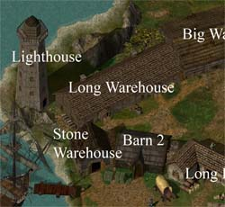 Image 1 - Map Planning (section) |
I then started a listing, allocating an area number to each building that had to be accessible and associating that number with the name on the map. The trick is consistency; once I had allocated an area number to a building, then I used that number for everything to do with that building. This also acted as a workflow listing to keep me up-to-date with what was done, was still needed doing etc. etc.
|
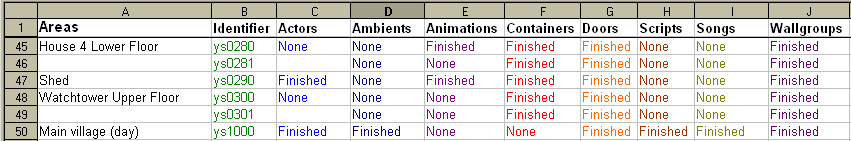 Image 2 - Area Allocation and Workflow (section) |
Finally I listed the names of all of the doors, travel regions and entrances for each area. Some areas don't have entrances - internal doors, for example - and some areas don't have doors - internal staircases, for example. Internal doors were given the suffix 'i[x]' where 'i' stood for internal and [x] was the door number starting at zero e.g. 'ys0250i1' would be internal door 1 in area ys0250. Doors that lead to other areas were given the simple name of 'DoorXXXX'. Then just to really, really confuse the issue, some doors that should have Travel Regions don't have them because it was done by script and info point!!! (See tutorial 'Info Points and Proximity Bombs').
|
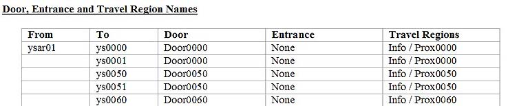 Image 3 - Doors and Entrances Allocation (section) |
If we just read across the top line here, it says 'Moving from area ysar01 to area ys0000 we go via Door0000. We don't need an Entrance in area ys0000 because the movement is going to be scripted using info point Info0000 and proximity box Prox0000'. Look at the second line: this reminds me that movement to area ys0001 is controlled by the same info point/proximity box script as the move to area ys0000.
If this had been a simple 'change area' move to enter area ys0000, then the third box would have had an entrance called 'Exit0000' and the last box would have said 'Trav0000' i.e. exit the area here using travel region Trav0000.
It also allowed me to keep track of which doors and entrances had been created in which areas, because I could simply strike them off when complete.
One last thing before we actually start with DLTCEP; I'm not going to tell you how to set it up. If you've downloaded it, then the setup tutorial can be downloaded from the same site.
This will bring up the Tileset Editor.
|
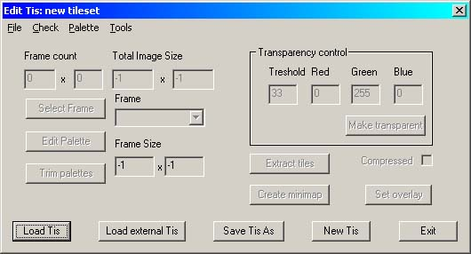 Image 4 - The Tileset Editor |
DTLCEP will import the bitmap, convert it to a tileset and preview it for you. In this case I am loading a warehouse that is part of my mod; we will use this warehouse for the rest of the tutorial. Look at the top left of the screen and note the figures in the Frame Count box - you're going to need them.
|
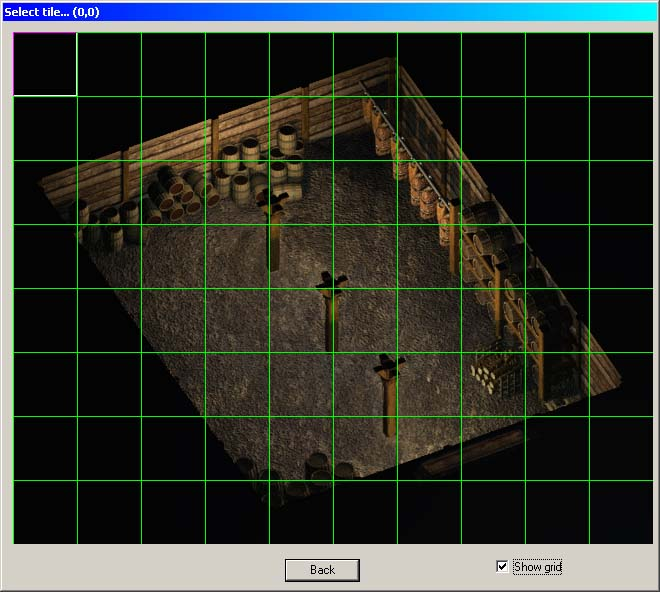 Image 5 - Area Preview |
DLTCEP will generate the .mos file. The .mos file is the small area map that you see in the game when you select the Map icon.
A word of advice here. Although areas can share .wed files, it's not a good idea unless you know exactly what you're doing - in which case, you wouldn't be reading this. .wed files must be of six alphanumeric characters; no more, no less. The advice is to name your .tis file with the same name that you will give to its associated .wed file. When you have saved the tileset
You'll be doing a lot of the last command; quite often DLTCEP requires to be reloaded to recognise parts that you've just created.
Starting the WED file
Before we continue, there are a few things that you must be aware of if you are creating an area that has a night area and for whatever reason, the night area is different from the day area. This tutorial deals with the day .wed only because otherwise it would have the same information repeated twice each time we edit the .wed. So, whenever I say 'Edit .wed', there are additional steps that you must take to ensure that the night area will work also. Whenever I tell you to exit the .wed screen, you MUST MUST MUST save the area. You must then select the 'Night wed' button and repeat the .wed editing we have just done. What you are doing is building two weds - day and night - in parallel. Again, when you exit the night wed screen, you MUST MUST MUST save the area before continuing onto the next section. Failure to do so will mean the loss of ALL the .wed editing you have just done.
If the day and night .weds are the same (as will be the case in 99.9% of cases) then there is a quick way of creating the entire night .wed in one go. See 'Cheating in the Night .wed'.
Please note that the last selected .wed editing button will influence the Preview screen for all aspects of editing. If your last selection was 'Night wed' and you want to see the day .tis in the Preview screens,
and when the Edit Wed screen comes up,
This will reset the Preview .tis.
The more you add to your area, the bigger the .wed file will get. Here, we will build the basic .wed file that contains just the main area overlay to begin with.
All areas have the last two options, whether they are used or not. The Area Flag would usually be left at Normal unless you are building one of the specialised area options. Under Area Type, check the options you want - this is an indoor area and I'm allowing the party to rest in it. If the area is to have a day/night change then select it here - this causes the Infinity Engine to colour everything a very dark, dingy blue in imitation of night. At this particular point in my mod's story, no buildings have any light in them at all, so I need the night-time changeover indoors as well as out. Similarly, if this is outdoors then add your weather percentages - except that fog doesn't work. This is no fault of DLTCEP; it's faulty in the game. To actually get weather to work, we need to add the new area to mastarea.2da (later). The final box on this screen is the Script name; this will take the name of any area script that you wish to run.
|
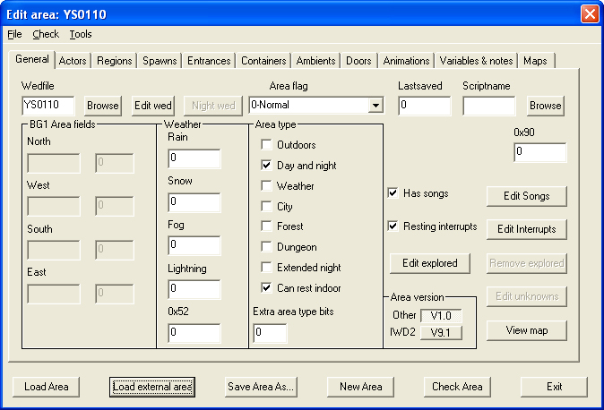 Image 6 - My basic wed file data |
Save your area and again, give it the same name as the tisfile and the wedfile. If you are creating an area that also has a night area display,
This fills in a little more detail on the initial creation of a night .wed. Although it probably is possible to do this later in the creation of the area, I found that the only really reliable way to get a night .wed into the file is to do it right at the beginning of the area creation process. There is only one additional flag required; Extended Night.
|
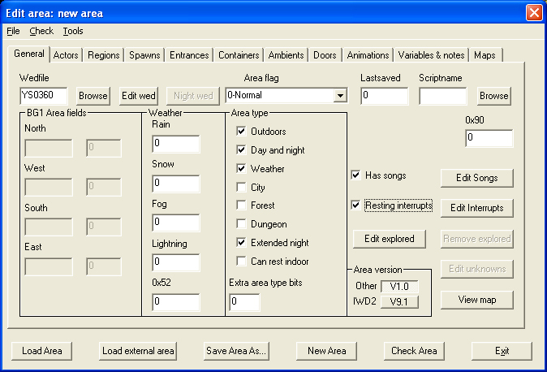 Image 7 - Extended Night |
The Night Wed button will not be available until after you have saved the .are.
If you are greeted by this message box:
|
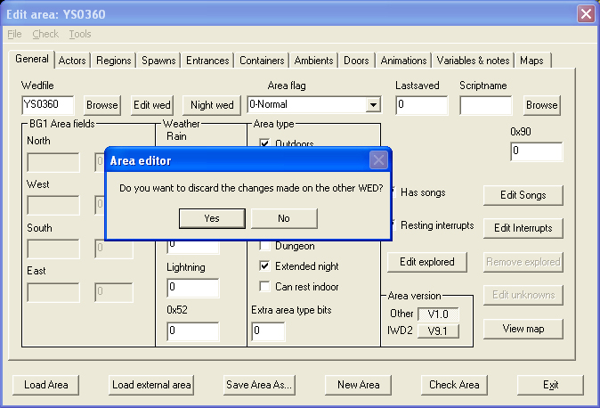 Image 8 - Discard Edit |
You will now get the night wed dialog box. This is identical to the day wed dialog as described above, except that the night .tis file is suffixed with a letter 'N'. Continue as above for adding the day .wed .tis file; from here on, all work done in the night .wed file will be done in the same way as the equivalent work in the day .wed file.
|
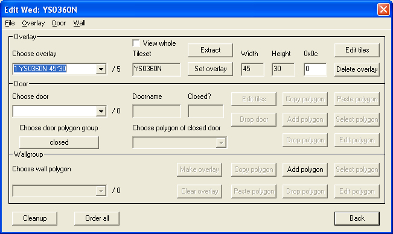 Image 9 - Night Wed Dialog |
You also need to be aware of one other point. If you are editing an area with a night .wed file, a very few of the following instructions are going to seem incorrect as they were taken while creating a day-only .wed area. When you are editing the night .wed file and the button or combobox you want is disabled, then use the drop-down menus as illustrated below. This tends to be more of a problem when creating doors.
.|
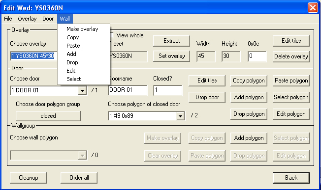 Image 10 - .wed Menus |
We now need to import the tisfile as Overlay 1, the background overlay.
You will be presented with a blank Wed Editor.
The Tileset Editor will re-appear (image 7).
DLTCEP will preview the tileset as a long list of individual tiles. This is not the result of any bug in DLTCEP; a tileset (.tis) does not contain any information as to exactly how it is laid out. If you were to view the same tileset from the Area Editor, it will display correctly because the .are file does contain the x,y sizes. One thing to be aware of is that if you have more than 704 tiles in the tileset, they will not be displayed here but they do still exist.
|
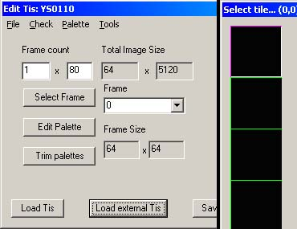 Image 11 - Initial tileset import |
|
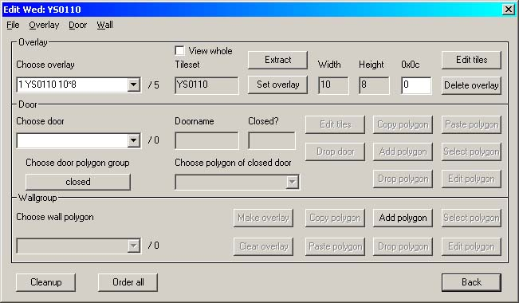 Image 12 - Overlay import complete |
Overlay complete - this shows the corrected tile dimensions.
At this point we should have four of the seven required files: .mos, .tis, .are and .wed. Of these, the .wed, the .tis and the .are will continue to grow as you edit the area; only the .mos is fixed in size. Back everything up at this point - in fact, I back up new areas every time I make a change and prove it works. DLTCEP isn't perfect and it gets very frustrating to make a series of changes and then find the area has fallen over. There's no Undo - you have to provide your own.
Look again at Image 7 above. This is a later version 6.0 screenshot; it has gained another button next to the 'Remove Explored' button that is labelled 'Edit Explored'. This will bring up a picture of your area that, if you check 'Show All', will cover your area in zeroes. This is the complete Fog Of War and if you wish to show some (or all) areas as already explored, you will need to changed the corresponding zero to one. Use the dropdown box at the bottom of the screen to change between the two.
|
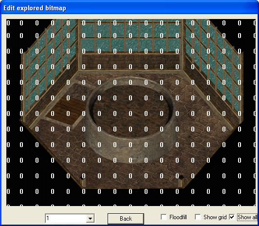 Image 13 - Editing the Fog Of War |
The Search, Light and Height maps are all created in exactly the same fashion but I'll make no bones about this - what comes next can be unadulterated left-click misery if you are editing a large area. The Search map at its most basic defines impassable areas and underfoot sounds. I'm rather grateful that this area at least is relatively small. While you are working the next three sections, save your work at regular intervals.
One minor point to be aware of; when left-clicking to fill a gridsquare it is NOT the tip of the cursor that defines the gridsquare to be filled, but the middle of the cursor. This can be a complete and utter pain until you get used to it.
|
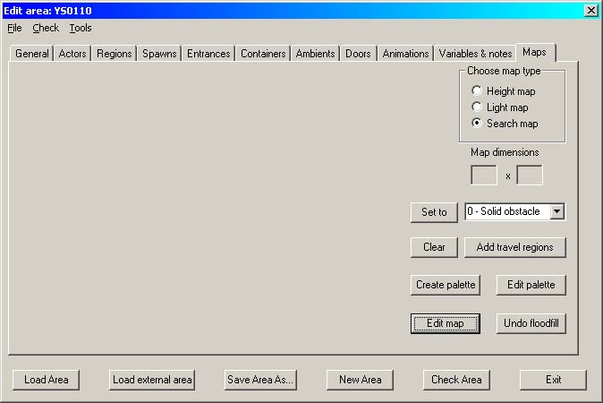 Image 15 - Maps tab |
You've just flooded the entire area with zeroes, marking it all as Impassable.... but this is the way you have to start. With the main seatown area of my mod, I actually started by flooding the entire area to Grass as that was the major part of it.
|
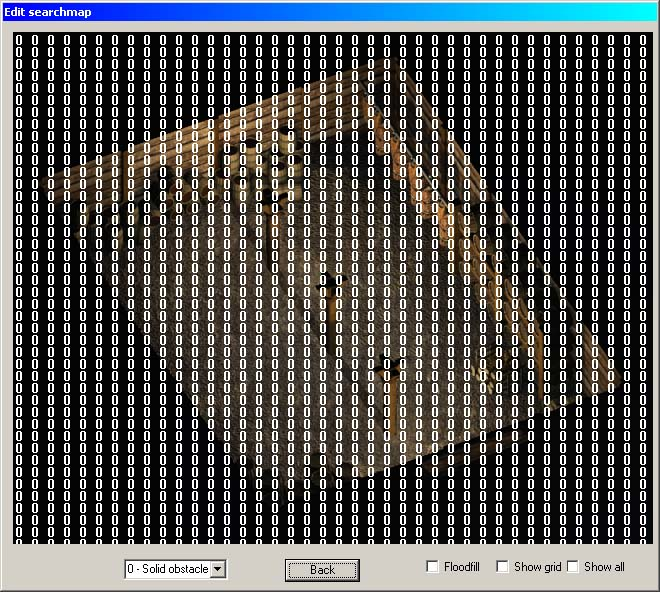 Image 16 - No-one's going anywhere here.... |
What we are going to do is to 'hollow-out' that impassable area with the sound we want to hear when the party enters the warehouse. I've decided that it has a stone floor.
The preview instantly clears, waiting for the new input. By left-clicking with the mouse I carefully outline the entire floor area in the figure 4, trying to ensure that there are no gaps in the boundary, because I want to floodfill it.
|
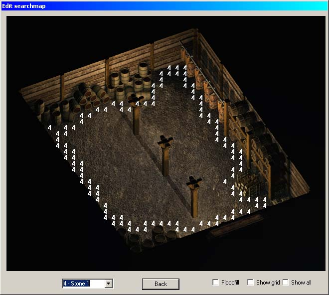 Image 17 - Floor outline |
|
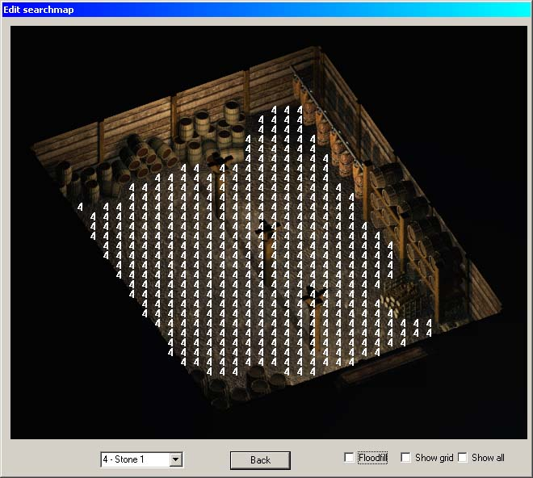 Image 18 - Success!!! |
If there is a hole in your boundary and you get it wrong
DLTCEP has another useful trick too for outlining large areas. Left-click and hold the button down, then drag the cursor slowly along the line you want. When you get to the end, release the button, immediately click it again and DLTCEP will fill in the grid squares that you've just dragged the mouse over.
So now the only problem is that I can walk straight through those upright support pillars.
You can now see the hole in the impassable region - I carefully add the base of the supports to the impassable region. I've made them larger than the actual support so that the characters are forced to walk around them, thus giving the illusion that the characters have solidity.
|
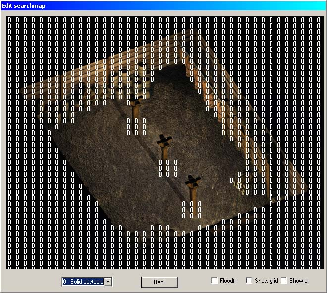 Image 19 - Reinstating the supporting pillars |
When you've finally finished your Search map
-and you will see the leftside of the screen create the map itself.
|
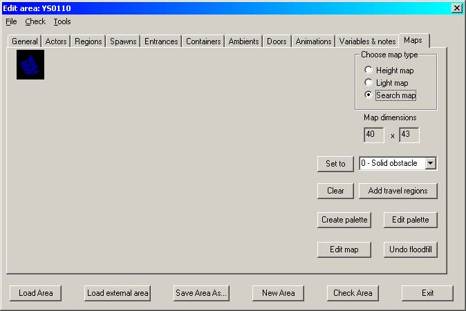 Image 20 - The Search map |
That tiny little square at the top left is the map itself; blue represents the stone floor and black the impassable areas. A bigger area will occupy more space in the preview window.
Those who are watching closely will have spotted a change between image 3 and image 17 - image 17 has gained shadows from the pillars. In this area the only light comes from opening the warehouse doors, so we assume the light comes directly in and the shadows can be drawn straight back. However! The light map has nothing to do with shading the characters when they walk behind obstacles! The Light map sets the ambient lighting for the area. It is created in the same fashion as the Search map, but whereas the Search map runs from 0-15, the Light map has RGB values from 0 (white) to 255 (black). I'm not going to go through all of the steps again - use the Search map for instructions.
If you're not entirely sure of the colour that you want
DLTCEP has the useful feature that if you click on the displayed palette to select a colour, it will give you the decimal number you need to select in the dropdown box on the preview screen.
I have generated an area for you to see as an example; it lights four different colours (including black). It also shows a DLTCEP oddity; you select RGB values as a decimal but it displays them as hexadecimal. In this case the decimal 55 in the dropdown box shows as hex 37 on the screen. This dropdown box is the one referred to in the previous paragraph.
|
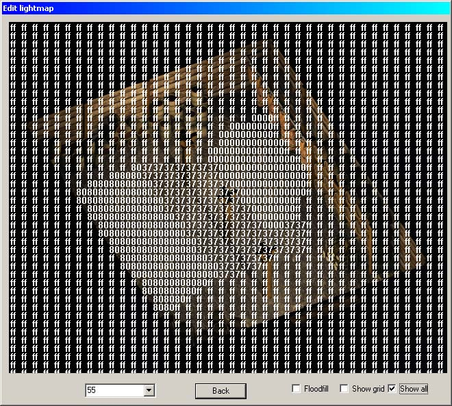 Image 21 - RGB values on the map |
|
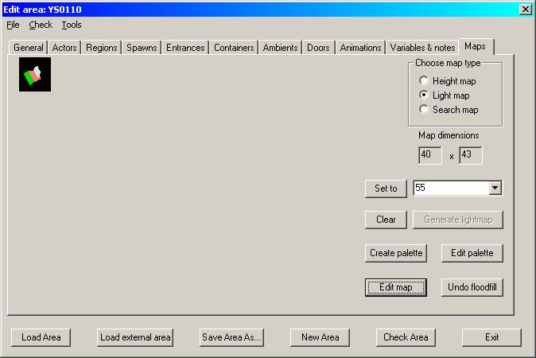 Image 22 - The finished Light Map |
|
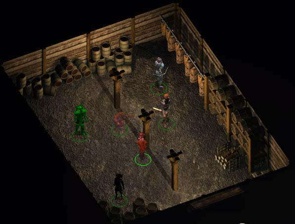 Image 23 - In the game |
So how do you shade characters when they walk across the ground shadows? Change the area lighting for that area....
The Height map is responsible for creating the illusion of the characters moving up and down stairs etc. It is created in exactly the same way as the Search map and the Light map but has only fifteen levels. These correspond approximately to feet; however, zero is six feet under and fifteen is seven feet above ground level. Ground level is six, a neutral grey colour. All the height map really does is to shift the cre a few pixels to the left or right (depending on the colour) to give the illusions of moving up or down; in all truth, I tend not to bother with it and almost always leave the light map as a uniform grey 6.
When you've finished with the three auxiliary maps and have saved all of your work, go away and CLUAConsole into your new area. Go on - it will work now if you've done everything right.
Happy?
The final move in this area is to set up the wallgroups for shading the characters when they walk behind objects and for cutting off the unwanted parts of animations. Getting this right can be a complete PITA, so there is a subtopic devoted purely to wallgroups.
To get the weather to work in your new area, you need to add it to the bottom of the mastarea.2da file. Depending on which mods you've installed, mastarea.2da may already be in your override folder or it may still be hard-coded into the game. Either way, you need to add a line to the bottom:
[areaname] value
- where [areaname] is the name of your area e.g. ys0110 and 'value' is just that - the word 'value'. You can add the line using either Near Infinity or Weidu; as above, if the mod is for yourself only then NI will do but if you aim to distribute it, you will have to use Weidu.
So you've finished the .tis file, added actors and baddies and doors, then suddenly you realise that part of the main .tis file is completely wrong. Or maybe you just want to make a minor modification to it....
You need to be careful here when replacing a small block of tiles as you cannot replace tiles as a block [b]unless[/b] they are in a straight line. Based on an exchange of messages I had with Avenger, I believe this is a problem with the .tis file structure and not with DLTCEP itself.
To be sure that any replacement tiles fit perfectly with the exiting .tis file, first change the original bitmap to incorporate the required changes, then dumped the new area bitmap into the override directory. In the following example, I removed the barrels from the entrance of the Town Hall in the village of Soubar; somehow I couldn't see the town council allowing them to remain on the steps to trip everyone up.....
This will bring up the Edit Tis screen.
|
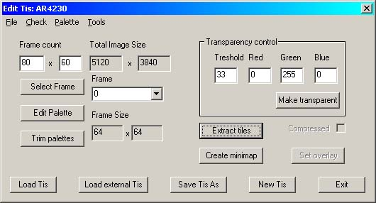 Image 28 - The Edit .tis screen |
This will load the altered bitmap into the preview screen. Now,
This will bring up the Tileset Extraction screen and close down the Preview screen.
|
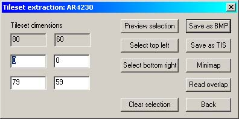 Image 29 - The Tileset Extractor |
To bring up the Preview screen again,
Scroll the Preview screen to where you wish to replace the tiles. I'm not entirely sure how many tiles are involved in this particular replacement, so I'm going to take out a 4x4 block around the steps to be sure I get to cover all of the original area.
|
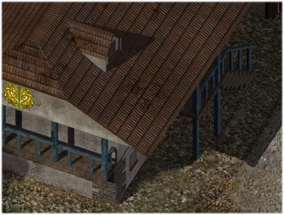 Image 30 - Soubar Town Hall after it has been de-barreled |
DLTCEP promptly flies right back to displaying 0,0 as the top-left tile... don't know why... but it doesn't matter because the number of the tile you've just clicked remains in the title bar of the preview screen.
DLTCEP obliges by correctly displaying the tile you originally selected....! Now, remember what I said about DLTCEP not being able to handle new .tis blocks unless they are in a horizontal line and are contiguous? In this case I am extracting a 4x4 block of tiles, so I can do this as four blocks of 1x4 tiles. As it's not much of a calculation, I enter 53,32 into the lower pair of boxes and
This leaves the preview screen displaying the 1x4 block of tiles.
|
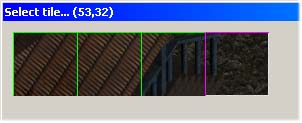 Image 31 - The First Block |
We'll do the next bit the quick way.....
The option box will automatically generate a .tis name based on the name of the new bitmap. Don't accept it. You will trash the existing tileset if you do. Mine was called 'ar4230.tis', so to make the re-import of the new tiles into the existing tileset a little easier, I named the first block as 'ar4320b1.tis'. You are restricted to eight characters when generating a tileset name, so be aware of this. I went on to generate ar4320b2.tis, ar4320b3.tis and ar4320b4.tis to make my 4x4 block complete.
When you have exported all of your blocks or individual tiles as new .tis tilesets,
In the 'Overlay' section
The 'Edit Tiles & Overlays' screen will come up.
|
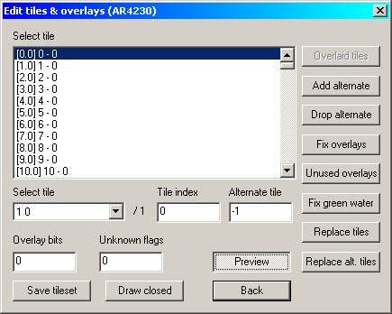 Image 32 - The 'Select Tiles and Overlays' screen |
- and either scroll to the first tile that needs replacing, or directly select the x,y co-ordinates in the 'Select Tile' box.
This brings up the 'Replace Tiles' screen. Scroll down to the first tileset you created - in my case it was ar4230b1.tis - and select it by double-clicking or by highlighting and selecting 'OK'. You should see the replacement tiles appear on the Preview screen. Continue until you have imported all of your new tiles.
|
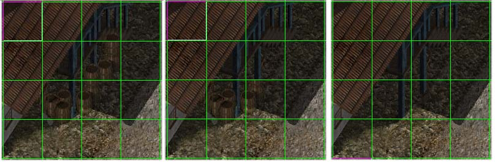 Image 33 - Left - original; Middle - halfway done; Right - complete |
DONE!!!!!!
- and test it in your game. Don't forget to save the new .tis, .are and .wed files. Oh, and if you want, you can now delete the replacement tilesets you made and also the new area .bmp file - but only from the override directory!. :)
You can replace the entire tileset in a similar fashion without trashing any existing doors... contrary to my original way of thinking. Thanks to Avenger for pointing out the obvious; I still can't believe I missed it!!! As we are working with new areas, I am going to assume that you have created an entire new bitmap to replace the old one that you now don't like. At the cost of pointing out the obvious, this is not going to work successfully if you have already created height, light and search maps and the replacement area does not match the original area insofar as these three maps are concerned. In the main, much of this is going to be a repeat of the above.
This will bring up the Edit Tis screen.
|
Image 34 - The Edit .tis screen |
This will load the altered bitmap into the preview screen. Now,
In the 'Overlay' section
The 'Edit Tiles & Overlays' screen will come up.
|
Image 35 - The 'Select Tiles and Overlays' screen |
Ensure that the first line in the tile list box is selected (tile 0,0). It is highlighted as default but it does no harm to check.
This brings up the 'Replace Tiles' screen. Scroll down to the tileset you have just created and select it by double-clicking or by highlighting and selecting 'OK'. You should see the replacement tileset appear in its entirety on the Preview screen.
- and test it in your game. Don't forget to save the new .tis, .are and .wed files and at the same time, you can delete the new area bitmap and either delete the replacement tileset you created or move it somewhere safe.
Area songs include day and night ambient music and battlemusic (fight, win, lose). Actually adding them is very quick easy; selecting them takes as long as you have patience to listen..... Songs are added and deleted from the 'General' tab of an area. If DLTCEP is not running, start it and select the area you are working on.
This will bring up the song selection screen. For this area, I have chosen only to have daylight incidental music and simple battlemusic; I have added birdsong for the nightime hours and I decided that was enough for that time.
|
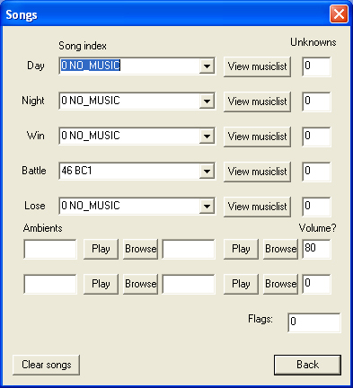 Image 36 - The 'Song' screen |
Each dropdown box contains all the available songs for that game. DLTCEP lists pieces that are associated with an area as 'area[number]'; if you are used to dealing with Near Infinity, that calls all area music 'mus[number]'. In both cases, it is the suffix [number] will be the same for any given area.
|
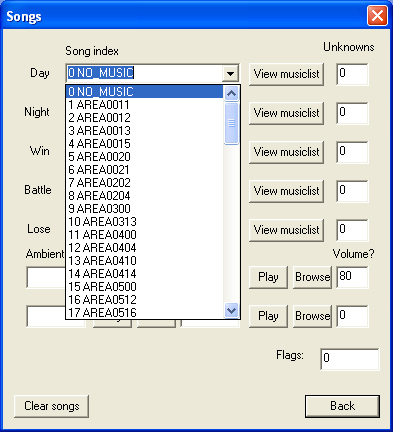 Image 37 - Song Selector |
The biggest grief here is deciding which music you want for the relevant time/battle. For this example, we will select and test the daylight music for my mod town.
From here you can test-play every piece of music.
One of the quirks of DLTCEP is that highlighting a music piece will cause it to be selected for renaming
|
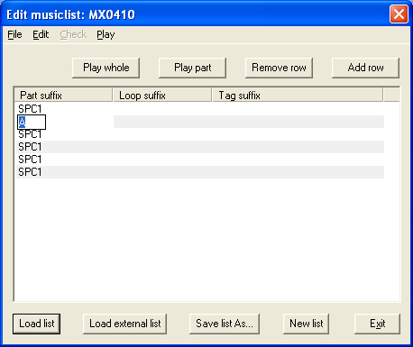 Image 38 - Selecting a piece for playing |
You can cancel that piece and select another as often as needed. When you are satisfied with each song that you require:-
You also have the option to set four ambient sounds from this screen. Please note though that they will play continuously, unlike the ambients set from the Ambient tab, so these are only useful for things like sea sounds if you are onboard ship or the creaking of a windmill sail when you are in the mill.
Showing the dropdown isn't going to help you much as the names are pretty obscure. The best I can suggest here is to find an area that has the ambient sound you want and open that area with DLTCEP to see what the ambient sound is called. The volume box on the right of the the ambient line seems to control the volume of each row.
When you are happy with your song selections:-
Now go and test it in the game.
There are times when your wallgroups, doors and overlays will all reach an enormous number of vertices and the thought of having to repeat the same boundary for a night .wed is not very appealing at all. Also, you will invariably trash an area at some stage and saving the polygons as you draw them will reduce the workload substantially when rebuilding. Fortunately, DLTCEP has the answer to this in the form of re-usable polygons. The detail here, although dealing directly with overlays, is applied in the same fashion to doors and wallgroups as well. Image 9 shows the head of a long river section - look at the number of vertices in it. I really did not want to have to repeat that outline again. Secondly, trying to repeat an outline on the darkened night .tis bitmap isn't guaranteed to give maximum results...
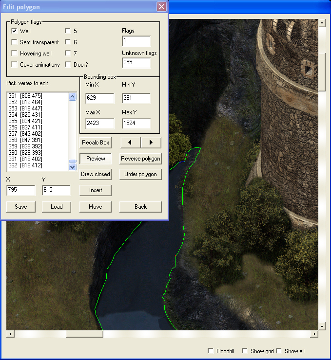 Image 39 – 362 vertices
A standard Save dialog will pop up, set with the suffix .ply as default and saving to the \override folder. Leave it as-is and select a memorable name for the polygon. I settled for 'ys0360river.ply' - not original but at least it's recognisable. On the next run through this overlay when creating the night .wed, all I had to do when I got here was to
- and select 'ys0360river.ply' from the dialog box. Don't forget to add the relevant flags; as this is an overlay polygon I don't need any flags.
|
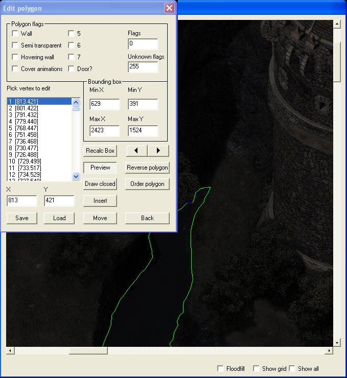 Image 40 – Re-loaded polygon |
Don't forget to back up these saved polygons; in the event of a trashed area they will save an awful lot of time. Trust me - I've been there and far too often.
Unfortunately there's an intermittant bug in DLTCEP which I know Avenger has tried to fix but it still rears its ugly head. If you reuse a polygon in a day/night night area, DLTCEP gets the day and night overlays confused, causing the area to crash in the game. In Image 41, I selected 'Edit Wed' for the day wed, but if you look at the image you will see that the overlay and the tileset both show the night versions.
|
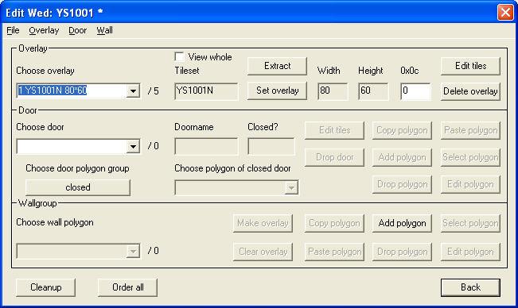 Image 41 – The reused polygon bug |
This is easily fixed but you will need a copy of Near Infinity to do it.
Here I've highlighted the faulty tileset entry (with apologies for the defective screenshot).
|
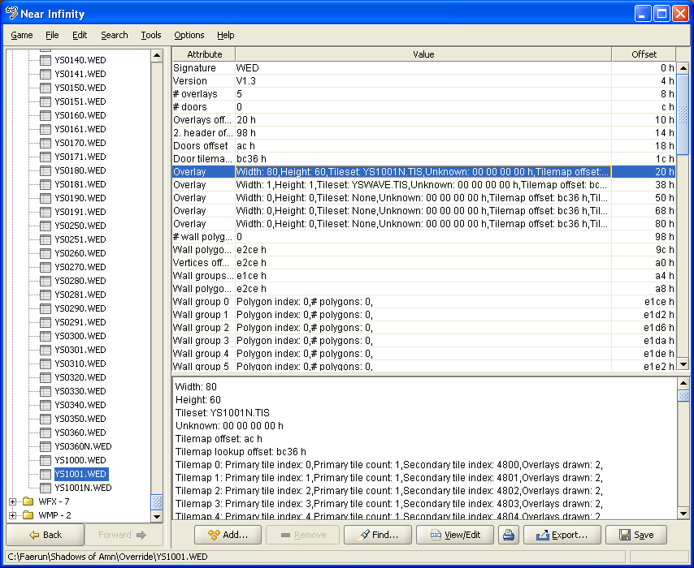 Image 42 – The faulty tileset entry |
This will start the overlay editing screen. Here I've highlighted both the faulty line and the correct tileset in the selection box at the bottom of the screen.
|
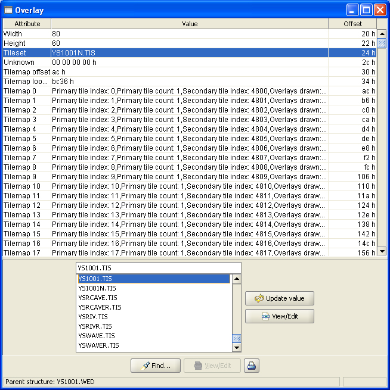 Image 43 – Correcting the tileset entry |
Problem solved.
|
Tutorial written by Yovaneth, apprentic’d at Candlekeep during the Bhaalspawn Troubles. Post it where you will but please don’t take credit for what you have not written. |